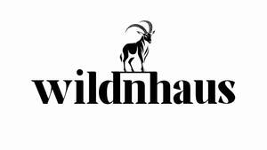

Trade Mark Journal No.2025/020 16 May 2025
UK00004197604 1 May 2025 (8,11,16,18,20,21,22,24,25)

- Class 8
- Emergency cutting tools [hand tools]; Emergency multi-tools [hand tools]; Hand-operated tools for gardening; Cutting tools [hand tools]; Adzes [tools]; Hand-operated sharpening tools and instruments; Hand-operated tools for forestry; Knives [hand tools]; Garden tools, hand-operated; Hatchets [hand tools]; Saws [hand tools]; Gardening tools (Hand operated -); Shovels [hand tools]; Bush hooks [hand tools]; Pedicure implements [hand tools]; Screwdrivers [hand tools]; Hand-operated cutting tools; Knife sharpeners [hand tools]; Adzes [hand tools]; Pruning saws [hand tools]; Hand-operated tools for repair of vehicles.
- Class 11
- Camping stoves; Camping lanterns; Cooking stoves for camping; Portable urinals for outdoor activities; Outdoor showers for bathing; Heaters for tents; Electric outdoor grills; Electric cooking stoves; Cooking stoves; Stoves for cooking.
- Class 16
- Printed visuals; Graphic art prints; Art prints; Graphic drawings; Canvas prints.
- Class 18
- Camping bags; Hiking rucksacks; Hiking poles; Hiking bags; Bags for campers; Hunting bags; Hiking sticks; Collars for pets; Clothing for pets; Pets (Clothing for -); Garments for pets; Raincoats for pet dogs; Clothing for domestic pets; Leashes for animals; Pet clothing; Bags for carrying pets; Dog leashes; Animal leashes; Collars for cats; Clothing for dogs.
- Class 20
- Camping mattresses; Furniture for camping; Camping furniture; Camping tables; Sleeping mats for camping [mattresses]; Inflatable mattresses for use when camping; Foam camping mattresses; Air mattresses for use when camping; Furniture for campers; Metal furniture and furniture for camping; Camp beds; Picnic units [furniture]; Travel cots; Picnic benches; Beds for pets; Beds for household pets; Portable beds for pets; Pet houses; Pet cushions.
- Class 21
- Camping grills; Portable pots and pans for camping; Portable cooking kits for outdoor use; Picnic crockery; Cooking utensils for use with domestic barbecues; Cooking utensils, non-electric; Cooking pots [non-electric]; Cooking pots, non-electric / Non-electric cooking pots; Non-electric cooking pans; Pet feeding dishes; Pet feeding bowls.
- Class 22
- Tents for camping; Camping tents; Tents for mountaineering or camping; Camping swags; Tents [not for camping]; Tents for mountaineering; Tents for use in angling; Tents; Shower tents; Tents [awnings] for caravans; Tents [awnings] for vehicles; Awnings for tents.
- Class 24
- Sleeping bags for camping; Picnic blankets; Blankets for outdoor use; Travelling blankets.
- Class 25
- Fishing clothing; Waterproof boots for fishing; Hiking boots; Hunting shirts; Hunting jackets; Hunting pants; Fishing footwear; Hiking shoes; Fishing jackets; Hunting vests.
Awsonridge Co. Limited